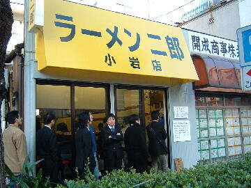
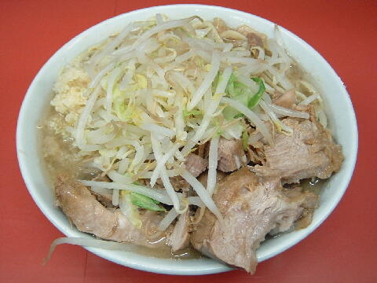
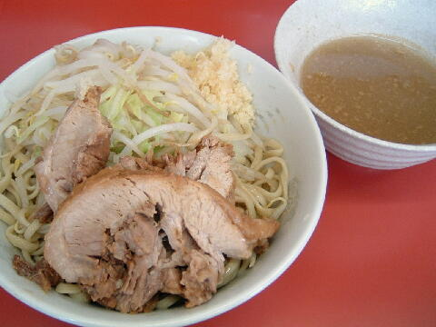

江戸川区 西小岩 3-31-13
土・日・祝
10：30〜15：00

小ラーメン 750円
大ラーメン 850円
少なめ 700円、半分 650円
豚増し券 ＋150円
脂っKOIEA 50円
つけ麺 ＋100円
缶ウーロン 100円
店員は、メガネさん（店主）と助手。
一味唐辛子、粗挽き黒胡椒、白胡椒、魚粉、麻辣。
レンゲ無。ティッシュ有。名刺無。
BGMは、小音量のAM。
トッピングは、いつもと同じ。
メルマガは「a0001675185@mobile.mag2.com」で用意されている。
ラーメン二郎 小岩店 小岩店のTwitter
「ラーメン二郎 小岩」でヤフー検索
「ラーメン二郎 小岩」でヤフーリアルタイム検索
「ラーメン二郎 小岩」でグーグル検索

小ラーメン＋豚増し券 ニンニク
麺は、二郎にしては細めのストレート麺。麺の硬目、柔らか目は出来ない。
ぶたは、小ぶりだがしっかりとした二郎の豚。豚増し券は１枚まで。
スープは、やさしいがしっかりと出汁のでているもの。。
ヤサイは、モヤシ8：キャベツ2といったところ。ミネラルタップリのモヤシが美味い。
ニンニクは、からめの生ニンニクがタップリ盛られる。

小ラーメン＋つけ麺 ニンニク
トッピングはニンニクとヤサイのみ。あつもりはできない。
つけ汁の丼には、柚子胡椒をアクセントにした、酸味のあるつけダレ。
麺の丼には、冷水で絞められコシが出た麺。ヤサイ、ブタ、ニンニク。
2011年夏以来提供されていない。
ＰＣ店